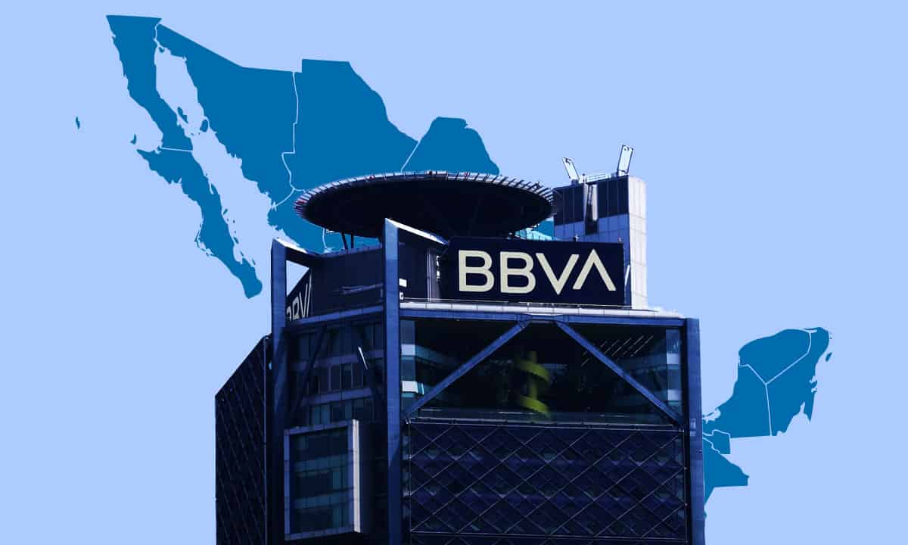
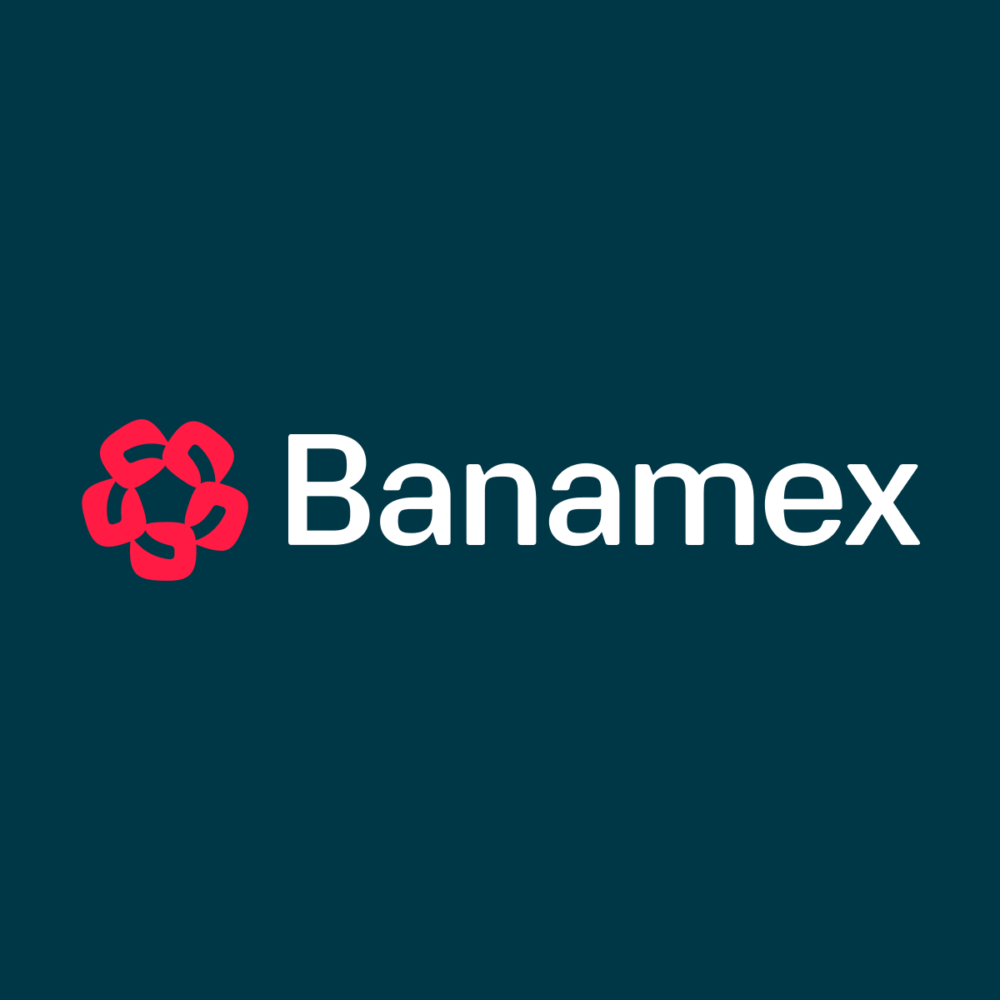

En México, existen varios tipos de instituciones financieras, incluyendo bancos múltiples, bancos de desarrollo, y otras entidades financieras. Los bancos múltiples son los que ofrecen una gama más amplia de servicios, mientras que los bancos de desarrollo se enfocan en apoyar sectores específicos de la economía. Además, hay otras instituciones como las sociedades financieras populares (sofipos) y las sociedades financieras de objeto múltiple (sofomes) que también juegan un papel en el sistema financiero.
a continuacios te mostrare cuales son los bancos que existen en mexico

